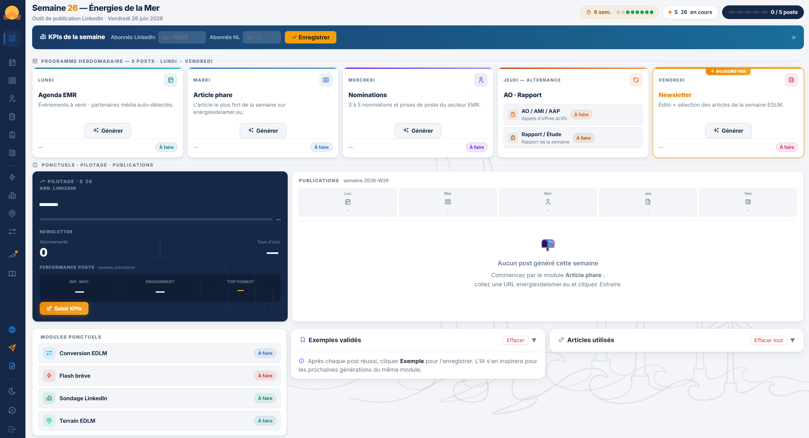
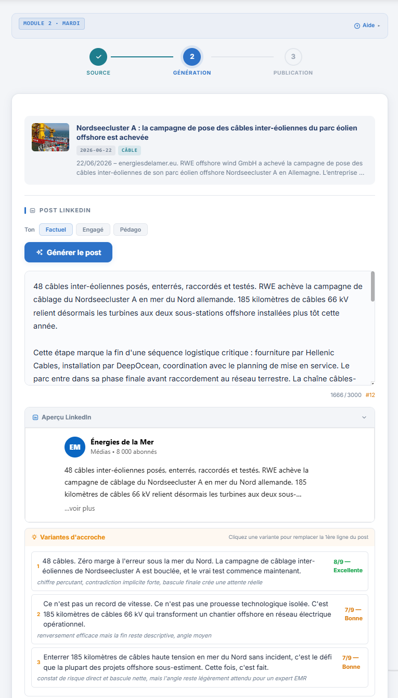
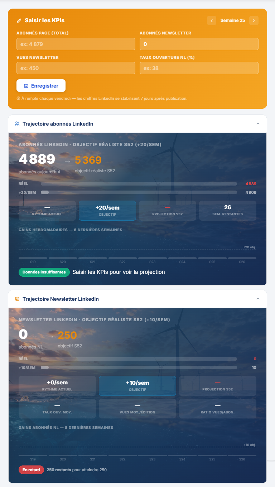

Application web sur-mesure pour Énergies de la Mer : 9 modules couvrant toute la stratégie LinkedIn TOFU / MOFU / BOFU. Du contenu WordPress au post publié en moins de 30 secondes.
EDLM est un média B2B indépendant spécialisé dans les énergies marines renouvelables — ~4 900 abonnés LinkedIn, newsletter EMR Hebdo, site energiesdelamer.eu. La présence LinkedIn est un levier commercial et éditorial central.
La mission NorthIA : concevoir, développer et déployer une application web qui couvre l'intégralité du workflow de production — de l'article WordPress au post LinkedIn publié dans Geckosocial — en moins de 30 secondes par post.

Vue d'accueil : programme hebdomadaire Lundi→Vendredi, pilotage KPIs, publications de la semaine et modules ponctuels TOFU/MOFU/BOFU.

Étape 2 : le post est généré depuis l'article WordPress. L'éditeur intégré affiche le compteur de caractères, l'aperçu LinkedIn et 3 variantes d'accroche scorées par l'IA.

Module Pilotage : saisie des KPIs hebdomadaires, trajectoire abonnés LinkedIn vers objectif S52, suivi newsletter (vues, taux d'ouverture, ratio vues/abonnés).
Chaque module correspond à un type de contenu précis avec ses règles, son ton, et son format LinkedIn adapté.
Au-delà de la génération de posts, l'application embarque un tableau de bord éditorial complet — sans outil tiers.
Le pilotage suit semaine par semaine : nombre de posts produits par module, abonnés LinkedIn, portée estimée, taux d'engagement. Les données sont synchronisées dans Upstash Redis — accessibles depuis n'importe quel appareil, persistantes entre les sessions.
| Composant | Technologie | Rôle |
|---|---|---|
| Backend | Node.js + Express | Serveur API, routage, orchestration des modules |
| Frontend | HTML/CSS/JS vanilla | SPA monopage — pas de framework, zéro dépendance |
| IA génération | Claude API (Haiku + Sonnet) | Rédaction des posts selon les prompts métier EDLM |
| Publication | Geckosocial API | Envoi en brouillon LinkedIn depuis l'application |
| Contenu source | WordPress REST API | Extraction automatique des articles EDLM |
| Persistance | localStorage + Upstash Redis | Historique, KPIs, exemples validés, URLs utilisées |
| Hébergement | Vercel | Déploiement continu — push = mise en prod |
Cette application est déployée en production pour Énergies de la Mer. L'accès public n'est pas ouvert pour protéger les données et le workflow éditorial du client.